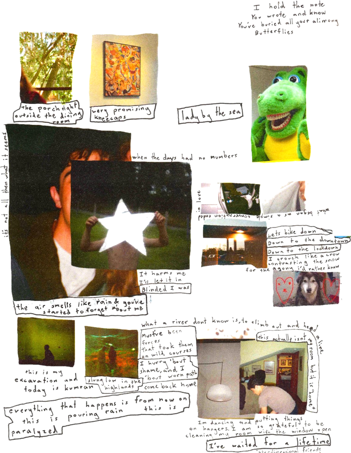

<!doctype html>
<html lang="en">
<head>
<meta charset="utf-8">
<title>can’t you just hold me? — Alder Cote</title>
<meta name="viewport" content="width=device-width, initial-scale=1">
</head>
<body>
<style>:root{--page:#000000;color-scheme:light}html,body{background:var(--page)}body{margin:0;overflow-x:hidden}#app{width:max-content;margin:0 auto}a{cursor:pointer}
body{margin:0}
.sp{font-family:'Times New Roman', Times, serif;color:#FCFBF7}
.sp a{color:#FCFBF7}
.lab{margin:0;font-family:Arial, Helvetica, sans-serif;font-size:10px;letter-spacing:.1em;text-transform:uppercase}
.chip{display:inline-block;background:#111111;color:#FCFBF7;font-family:Arial, Helvetica, sans-serif;font-size:10px;letter-spacing:.1em;text-transform:uppercase;padding:4px 7px;white-space:nowrap}
.ov{display:inline-flex;align-items:center;justify-content:center;border:1.5px solid #111111;border-radius:50%;font-family:Arial, Helvetica, sans-serif;font-size:13px;text-decoration:none;box-sizing:border-box}
.cl{cursor:url(./clef-cursor.png) 12 44, pointer}
.scr{scrollbar-width:none}.scr::-webkit-scrollbar{display:none}
.tile{position:absolute;overflow:hidden}
.tile video,.tile img{width:100%;height:100%;object-fit:cover;display:block}
.fr{position:absolute;top:0;overflow:hidden;box-shadow:inset -1px 0 0 #000000}
.fr img{width:100%;height:100%;object-fit:cover;display:block;transition:transform .6s cubic-bezier(.32,.72,0,1)}
.fr:hover img{transform:scale(1.06)}

.sp .ly,.book .ly{position:absolute;margin:0;font-family:'Courier New',Courier,monospace;font-size:14px;line-height:1.55;white-space:pre}
.sp .vt,.book .vt{position:absolute;margin:0;writing-mode:vertical-rl;font-family:'Courier New',Courier,monospace;font-size:12px;letter-spacing:.08em}
.book{perspective:3200px}
.book .pg{position:absolute;top:0;width:680px;height:1100px;background:#FFFFFF;box-shadow:0 0 0 1px #DDDAD2}
.book .leaf{position:absolute;left:680px;top:0;width:680px;height:1100px;transform-origin:left center;transform-style:preserve-3d;transition:transform .9s steps(9);z-index:5;cursor:pointer}
.book .face{position:absolute;inset:0;background:#FFFFFF;box-shadow:0 0 0 1px #DDDAD2;backface-visibility:hidden;-webkit-backface-visibility:hidden}
.book .turn{position:absolute;bottom:-40px;font-family:'Courier New',Courier,monospace;font-size:13px;background:none;border:0;color:#0000EE;text-decoration:underline;cursor:pointer;padding:0}
.book .pg,.book .face{overflow:hidden}
@keyframes jit{0%{transform:translate(0,0)}25%{transform:translate(1px,-1px)}50%{transform:translate(-1px,1px)}75%{transform:translate(1px,0)}}
.book .jit{display:inline-block;animation:jit .5s step-end infinite}
.sp .book{color:#111111}
.sp .book a{color:#0000EE}
.sp .book .turn{color:#FCFBF7;text-decoration:none;font-family:'Times New Roman', Times, serif;font-size:26px;line-height:1;bottom:-44px}
@keyframes hop{0%{transform:translateY(0) rotate(-6deg)}50%{transform:translateY(-6px) rotate(6deg)}}html,body{height:100%;overflow:hidden}#app{margin:0}.sp{height:var(--acvh,900px)!important}</style>
<script src="./site.js"></script>
<div id="app"></div>
<script type="text/x-template" id="tpl0"><div class="sp" style="width: 1440px; height: 900px; position: relative; overflow: hidden; background: #000000"><div style="position: absolute; left: {{bx}}px; top: {{by}}px; width: {{bw}}px; height: {{bh}}px; border: {{bb}}px solid #000000; box-sizing: border-box; background: #000000; overflow: hidden; z-index: 0"><video ref="{{main}}" data-hls="./hls/hm-film/master.m3u8" data-mp4="./hm-film.mp4" poster="./hm-film.jpg" autoplay muted loop playsinline disablepictureinpicture style="width: 100%; height: 100%; object-fit: cover; display: block; pointer-events: none"></video></div><div style="position: absolute; inset: 0; background: #000000; opacity: {{dim}}; pointer-events: none; z-index: 0"></div><div class="scr" ref="{{scr}}" onScroll="{{scroll}}" style="position: absolute; inset: 0; overflow-y: auto; z-index: 1"><section style="position: relative; height: var(--acvh, 900px)"><p style="position: absolute; left: 0; width: 1440px; text-align: center; bottom: 24px; margin: 0; font-size: 22px; line-height: 1; opacity: {{cue}}; transition: opacity .4s; pointer-events: none">↓</p></section><section style="position: relative; padding: 120px 64px 56px; display: flex; align-items: flex-end; justify-content: space-between; gap: 40px"><h1 style="margin: 0; font-weight: 400; font-size: 72px; line-height: 0.98">can’t you just hold me?</h1><div style="display: flex; gap: 8px; flex: none; padding-bottom: 6px"><a href="https://open.spotify.com/artist/0CiMpVlvx7HH7YSCczLotT" target="_blank" rel="noopener" class="ov" style="height: 40px; padding: 0 14px; min-width: 48px; background: #4FB848; color: #111111">spotify</a><a href="https://music.apple.com/us/artist/alder-cote/1871483317" target="_blank" rel="noopener" class="ov" style="height: 40px; padding: 0 14px; min-width: 48px; background: #F2C230; color: #111111">apple music</a><a href="https://www.instagram.com/alder.cote/" target="_blank" rel="noopener" class="ov" style="height: 40px; padding: 0 10px; min-width: 48px; background: #E8173A; color: #FFFFFF">ig</a><a href="https://www.tiktok.com/@aldercote" target="_blank" rel="noopener" class="ov" style="height: 40px; padding: 0 10px; min-width: 48px; background: #0000EE; color: #FFFFFF">tok</a></div></section><section style="position: relative; height: {{bookH}}px"><div class="book" style="position: absolute; left: 40px; top: 24px; width: 1360px; height: 1100px; transform: scale({{bookS}}); transform-origin: 680px 0">
  <div class="pg" style="left: 0"><p class="vt" style="left: 26px; top: 40px">3.</p><p class="vt" style="left: 26px; top: 330px">3&nbsp;&nbsp;&nbsp;can’t you just hold me?</p><p class="vt" style="left: 26px; top: 860px">[ 0:00 ]</p></div>
  <div class="pg" style="left: 680px"><div style="position: absolute; left: 0; top: 80px; width: 680px; height: 135px"><p class="ly" style="left: 150px; top: 0px; text-align: left; font-size: 18.9px; line-height: 29.7px; ">you used to call me</p><p class="ly" style="left: 180px; top: 30px; text-align: left; font-size: 18.9px; line-height: 29.7px; ">when you'd do your laundry</p><p class="ly" style="left: 210px; top: 59px; text-align: left; font-size: 18.9px; line-height: 29.7px; ">and folding all your clothes</p><p class="ly" style="left: 150px; top: 89px; text-align: left; font-size: 18.9px; line-height: 29.7px; ">you can't stand to be alone</p><div style="position: absolute; left: 150px; top: 127px; width: 360px; border-top: 1px solid #111111"></div></div><div style="position: absolute; left: 0; top: 255px; width: 680px; height: 135px"><p class="ly" style="left: 150px; top: 0px; text-align: left; font-size: 18.9px; line-height: 29.7px; ">now god knows i'm changing</p><p class="ly" style="left: 180px; top: 30px; text-align: left; font-size: 18.9px; line-height: 29.7px; ">i've tried to replace this</p><p class="ly" style="left: 210px; top: 59px; text-align: left; font-size: 18.9px; line-height: 29.7px; ">and fill the empty space<span style="display: inline-block; width: 96px; height: 15px; border: 1px dashed #111111; margin-left: 12px; vertical-align: -2px"></span></p><p class="ly" style="left: 150px; top: 89px; text-align: left; font-size: 18.9px; line-height: 29.7px; ">but you’re standing in the way</p><div style="position: absolute; left: 150px; top: 127px; width: 360px; border-top: 1px solid #111111"></div></div><div style="position: absolute; left: 0; top: 431px; width: 680px; height: 163px"><p class="ly" style="left: 22px; top: 0px; text-align: left; font-size: 18.9px; line-height: 29.7px; ">can't you just hold me?</p><p class="ly" style="left: 22px; top: 30px; text-align: left; font-size: 18.9px; line-height: 29.7px; ">pretend you love me</p><p class="ly" style="left: 22px; top: 59px; text-align: left; font-size: 18.9px; line-height: 29.7px; ">just for a moment</p><p class="ly" style="left: 22px; top: 89px; text-align: left; font-size: 18.9px; line-height: 29.7px; ">even though we have to go</p><p class="ly" style="left: 22px; top: 119px; text-align: left; font-size: 18.9px; line-height: 29.7px; ">for the night</p><p class="ly" style="left: 358px; top: 15px; text-align: left; font-size: 18.9px; line-height: 29.7px; ">just let me know</p><p class="ly" style="left: 358px; top: 45px; text-align: left; font-size: 18.9px; line-height: 29.7px; ">do you care? <input type="checkbox" onClick="{{stop}}" style="margin: 0 0 0 6px; vertical-align: -1px; cursor: pointer"></p><p class="ly" style="left: 358px; top: 74px; text-align: left; font-size: 18.9px; line-height: 29.7px; ">'cause you never showed it</p><p class="ly" style="left: 358px; top: 104px; text-align: left; font-size: 18.9px; line-height: 29.7px; ">at least i didn't know</p><p class="ly" style="left: 358px; top: 134px; text-align: left; font-size: 18.9px; line-height: 29.7px; ">i didn't know</p><svg width="34" height="34" viewBox="0 0 34 34" style="position: absolute; left: 321px; top: -34px" aria-hidden="true"><path d="M2 2 L32 32 M32 2 L2 32" stroke="#111111" stroke-width="1"></path></svg><div style="position: absolute; left: 338px; top: 6px; width: 1px; height: 160px; background: #111111"></div></div><p class="ly" style="right: 30px; bottom: 26px; font-size: 11px">4</p></div>
  <div class="leaf" style="transform: rotateY({{leafDeg}}deg)" onClick="{{flip}}">
    <div class="face" style=""><div style="position: absolute; left: 0; top: 80px; width: 680px; height: 135px"><p class="ly" style="left: 150px; top: 0px; text-align: left; font-size: 18.9px; line-height: 29.7px; ">stopped at a green light</p><p class="ly" style="left: 180px; top: 30px; text-align: left; font-size: 18.9px; line-height: 29.7px; ">we’re sitting still</p><p class="ly" style="left: 210px; top: 59px; text-align: left; font-size: 18.9px; line-height: 29.7px; ">if you still love me</p><p class="ly" style="left: 150px; top: 89px; text-align: left; font-size: 18.9px; line-height: 29.7px; ">you hide it well</p><div style="position: absolute; left: 150px; top: 127px; width: 360px; border-top: 1px solid #111111"></div></div><div style="position: absolute; left: 0; top: 255px; width: 680px; height: 135px"><p class="ly" style="left: 150px; top: 0px; text-align: left; font-size: 18.9px; line-height: 29.7px; ">i have the feeling</p><p class="ly" style="left: 180px; top: 29px; text-align: left; font-size: 18.9px; line-height: 29.7px">by the end of tonight</p><p class="ly" style="left: 210px; top: 59px; text-align: left; font-size: 18.9px; line-height: 29.7px; ">i won't be your person</p><p class="ly" style="left: 150px; top: 89px; text-align: left; font-size: 18.9px; line-height: 29.7px; ">but youll still be mine</p><div style="position: absolute; left: 150px; top: 127px; width: 360px; border-top: 1px solid #111111"></div></div><div style="position: absolute; left: 0; top: 431px; width: 680px; height: 95px"><p class="ly" style="left: 60px; top: 0px; text-align: left; font-size: 18.9px; line-height: 29.7px; ">you’ll still be mine</p><p class="ly" style="left: 210px; top: 27px; text-align: left; font-size: 18.9px; line-height: 29.7px; ">you’ll still be mine</p><p class="ly" style="left: 360px; top: 53px; text-align: left; font-size: 18.9px; line-height: 29.7px; ">you’ll still be mine</p></div><div style="position: absolute; left: 0px; top: 567px; width: 680px; height: 163px"><p class="ly" style="left: 22px; top: 0px; text-align: left; font-size: 18.9px; line-height: 29.7px; ">can’t you just hold me?</p><p class="ly" style="left: 22px; top: 30px; text-align: left; font-size: 18.9px; line-height: 29.7px; ">pretend you love me</p><p class="ly" style="left: 22px; top: 59px; text-align: left; font-size: 18.9px; line-height: 29.7px; ">just for a moment</p><p class="ly" style="left: 22px; top: 89px; text-align: left; font-size: 18.9px; line-height: 29.7px; position: absolute">even though we have to go</p><p class="ly" style="left: 22px; top: 119px; text-align: left; font-size: 18.9px; line-height: 29.7px; ">for the night</p><p class="ly" style="left: 358px; top: 15px; text-align: left; font-size: 18.9px; line-height: 29.7px; ">just let me know</p><p class="ly" style="left: 358px; top: 45px; text-align: left; font-size: 18.9px; line-height: 29.7px; ">do you care? <input type="checkbox" onClick="{{stop}}" style="margin: 0 0 0 6px; vertical-align: -1px; cursor: pointer"></p><p class="ly" style="left: 358px; top: 74px; text-align: left; font-size: 18.9px; line-height: 29.7px; ">'cause you never showed it</p><p class="ly" style="left: 358px; top: 104px; text-align: left; font-size: 18.9px; line-height: 29.7px; ">at least i didn't know</p><p class="ly" style="left: 358px; top: 134px; text-align: left; font-size: 18.9px; line-height: 29.7px; ">i didn't know</p><svg width="34" height="34" viewBox="0 0 34 34" style="position: absolute; left: 321px; top: -34px" aria-hidden="true"><path d="M2 2 L32 32 M32 2 L2 32" stroke="#111111" stroke-width="1"></path></svg><div style="position: absolute; left: 338px; top: 6px; width: 1px; height: 160px; background: #111111"></div></div><div style="position: absolute; left: 0; top: 755px; width: 680px; height: 135px"><p class="ly" style="left: 150px; top: 0px; text-align: left; font-size: 18.9px; line-height: 29.7px; ">heart made of copper</p><p class="ly" style="left: 180px; top: 30px; text-align: left; font-size: 18.9px; line-height: 29.7px; ">with your face on mine</p><p class="ly" style="left: 210px; top: 59px; text-align: left; font-size: 18.9px; line-height: 29.7px; ">you didn't bother</p><p class="ly" style="left: 150px; top: 89px; text-align: left; font-size: 18.9px; line-height: 29.7px; ">to keep me inside</p><div style="position: absolute; left: 150px; top: 127px; width: 360px; border-top: 1px solid #111111"></div></div><p class="ly" style="right: 30px; bottom: 26px; font-size: 11px">2</p></div>
    <div class="face" style="transform: rotateY(180deg)"><div style="position: absolute; left: 0; top: 80px; width: 680px; height: 254px"><p class="ly" style="left: 150px; top: 0px; text-align: left; font-size: 18.9px; line-height: 29.7px; "><span style="display: inline-block; transform: rotate(180deg)">boats on the ceiling</span></p><p class="ly" style="left: 180px; top: 30px; text-align: left; font-size: 18.9px; line-height: 29.7px; ">clothes on the chairs</p><p class="ly" style="left: 210px; top: 59px; text-align: left; font-size: 18.9px; line-height: 29.7px; ">snuck into dorms</p><p class="ly" style="left: 150px; top: 89px; text-align: left; font-size: 18.9px; line-height: 29.7px; ">sleep on the stairs</p><p class="ly" style="left: 180px; top: 119px; text-align: left; font-size: 18.9px; line-height: 29.7px; ">we made a promise</p><p class="ly" style="left: 210px; top: 148px; text-align: left; font-size: 18.9px; line-height: 29.7px; ">you changed your mind</p><p class="ly" style="left: 150px; top: 178px; text-align: left; font-size: 18.9px; line-height: 29.7px; ">i won't be your person</p><p class="ly" style="left: 180px; top: 208px; text-align: left; font-size: 18.9px; line-height: 29.7px; ">but youll still be mine</p><div style="position: absolute; left: 150px; top: 246px; width: 360px; border-top: 1px solid #111111"></div></div><div style="position: absolute; left: 0; top: 374px; width: 680px; height: 95px"><p class="ly" style="left: 60px; top: 0px; text-align: left; font-size: 18.9px; line-height: 29.7px; ">you’ll still be mine</p><p class="ly" style="left: 210px; top: 27px; text-align: left; font-size: 18.9px; line-height: 29.7px; ">you’ll still be mine</p><p class="ly" style="left: 360px; top: 53px; text-align: left; font-size: 18.9px; line-height: 29.7px; ">you’ll still be mine</p></div><div style="position: absolute; left: 0; top: 510px; width: 680px; height: 30px"><p class="ly" style="left: 70px; top: 0px; text-align: left; font-size: 18.9px; line-height: 29.7px; ">can't you just hold me?</p><svg width="34" height="34" viewBox="0 0 34 34" style="position: absolute; left: 351px; top: -2px" aria-hidden="true"><path d="M2 2 L32 32 M32 2 L2 32" stroke="#111111" stroke-width="1"></path></svg></div><div style="position: absolute; left: 0; top: 580px; width: 680px; height: 283px"><p class="ly" style="left: 150px; top: 0px; text-align: left; font-size: 18.9px; line-height: 29.7px; ">pretend you love me</p><p class="ly" style="left: 180px; top: 30px; text-align: left; font-size: 18.9px; line-height: 29.7px; ">just for a moment</p><p class="ly" style="left: 210px; top: 59px; text-align: left; font-size: 18.9px; line-height: 29.7px; ">even though we have to go</p><p class="ly" style="left: 150px; top: 89px; text-align: left; font-size: 18.9px; line-height: 29.7px; ">for the night</p><p class="ly" style="left: 180px; top: 119px; text-align: left; font-size: 18.9px; line-height: 29.7px; ">just let me know</p><p class="ly" style="left: 210px; top: 148px; text-align: left; font-size: 18.9px; line-height: 29.7px; ">do you care? <input type="checkbox" onClick="{{stop}}" style="margin: 0 0 0 6px; vertical-align: -1px; cursor: pointer"></p><p class="ly" style="left: 150px; top: 178px; text-align: left; font-size: 18.9px; line-height: 29.7px; ">'cause you never showed it</p><p class="ly" style="left: 180px; top: 208px; text-align: left; font-size: 18.9px; line-height: 29.7px; ">at least i didn't know</p><p class="ly" style="left: 210px; top: 238px; text-align: left; font-size: 18.9px; line-height: 29.7px; ">i didn't know</p><div style="position: absolute; left: 150px; top: 275px; width: 360px; border-top: 1px solid #111111"></div></div><p class="ly" style="left: 30px; bottom: 26px; font-size: 11px">3</p></div>
  </div>
  <div style="position: absolute; left: 679px; top: 0; width: 2px; height: 1100px; background: rgba(17,17,17,0.12); z-index: 9; pointer-events: none"></div>
  <button class="turn" style="right: 24px" onClick="{{flip}}">{{turnLabel}}</button>
</div></section><section style="position: relative; width: 1440px; height: 604.7px; background: #000000"><div class="tile cl" onMouseEnter="{{cIn0}}" onMouseLeave="{{cOut0}}" style="left: 0.0px; top: 0; width: 720.0px; height: 604.7px; box-shadow: inset -1px 0 0 #000000"><video src="./hm-cover-a.mp4" poster="./hm-cover-a.jpg" muted loop playsinline preload="none" disablepictureinpicture ref="{{cR0}}"></video><span class="chip" style="position: absolute; left: 8px; bottom: 8px">.936 · 09:11 ▶</span></div><div class="tile cl" onMouseEnter="{{cIn1}}" onMouseLeave="{{cOut1}}" style="left: 720.0px; top: 0; width: 720.0px; height: 604.7px; box-shadow: inset -1px 0 0 #000000"><video src="./hm-cover-b.mp4" poster="./hm-cover-b.jpg" muted loop playsinline preload="none" disablepictureinpicture ref="{{cR1}}"></video><span class="chip" style="position: absolute; left: 8px; bottom: 8px">.691 · 14:34 ▶</span></div></section><section style="position: relative; height: 120px; color: #FCFBF7; display: flex; align-items: center; justify-content: space-between; padding: 0 40px; box-sizing: border-box"><a href="sentimental-stories.html" style="color: #FCFBF7; font-size: 20px">← sentimental stories</a><a href="songs.html" style="color: #FCFBF7; font-size: 20px">/songs</a><a href="you-terrify-me.html" style="color: #FCFBF7; font-size: 20px">you terrify me →</a></section></div><div style="position: absolute; left: 40px; top: 30px; display: flex; align-items: baseline; gap: 12px; z-index: 5"><a href="index.html" style="font-size: 24px; text-decoration: none">alder cote</a><a href="songs.html" style="font-family: Arial, Helvetica, sans-serif; font-size: 11px; text-decoration: none">/ songs</a><span style="font-family: Arial, Helvetica, sans-serif; font-size: 11px">/ cant-you-just-hold-me</span></div><button onClick="{{toggle}}" aria-label="{{soundLab}}" title="{{soundLab}}" style="position: absolute; right: 36px; top: 22px; z-index: 6; background: none; border: 0; padding: 6px; cursor: pointer"><svg width="30" height="40" viewBox="0 0 30 40" style="display: block; overflow: visible; animation: {{noteAnim}}" aria-hidden="true"><ellipse cx="9" cy="32" rx="7.5" ry="5.5" transform="rotate(-22 9 32)" fill="#FCFBF7"/><rect x="15" y="4" width="2" height="28" fill="#FCFBF7"/><path d="M17 4 C 20 10, 27 12, 26 22 C 25 17, 21 15, 17 14 Z" fill="#FCFBF7"/><line x1="2" y1="40" x2="29" y2="2" stroke="#FCFBF7" stroke-width="1.6" style="display: {{strike}}"/></svg></button></div></script>
<script>

class C0 extends DCLogic {
  constructor(props) { super(props); this.state = { sound: false, y: 0, flipped: false }; }
  renderVals() {
    const on = this.state.sound, f = this.state.flipped, o = {};
    o.main = (el) => { if (el) this.v = el; };
    // the frame: resting size from the window's height, then grown by scrolling until it is the whole background
    const A = 1.77778, RH = this.state.rh || 900, y = this.state.y;
    const mh = RH - 150, rw = Math.min(1260, mh * A), rhh = rw / A, rx = (1440 - rw) / 2, ry = 76 + (mh - rhh) / 2;
    const p = Math.max(0, Math.min(1, y / (RH * 0.5))), e = p * p * (3 - 2 * p);
    o.bx = (rx * (1 - e)).toFixed(1); o.by = (ry * (1 - e)).toFixed(1);
    o.bw = (rw + (1440 - rw) * e).toFixed(1); o.bh = (rhh + (RH - rhh) * e).toFixed(1);
    o.bb = (2 * (1 - e)).toFixed(2); o.dim = (0.5 * e).toFixed(3);
    o.scr = (el) => { if (el && el.clientHeight && Math.abs(el.clientHeight - RH) > 1) setTimeout(() => this.setState({ rh: el.clientHeight }), 0); };
    o.scroll = (ev) => { const t = ev.target.scrollTop; if (Math.abs(t - this.state.y) > 0.5) this.setState({ y: t }); };
    o.cue = y > 40 ? 0 : 1; o.topO = y > RH * 0.6 ? 1 : 0;
    // the book fits the window: its two pages and the turn link, under the top band
    const bS = Math.min(0.72, (RH - 86 - 120) / 1100); o.bookS = bS.toFixed(4); o.bookH = Math.round(1100 * bS + 24 + 72);
    o.leafDeg = f ? -180 : 0; o.turnLabel = f ? '←' : '→';
    o.flip = () => this.setState({ flipped: !f });
    o.stop = (e) => { if (e && e.stopPropagation) e.stopPropagation(); };
    o.toggle = () => { const v = this.v; if (!v) return; v.muted = on; if (!on) { const p = v.play(); if (p && p.catch) p.catch(() => {}); } this.setState({ sound: !on }); };
    o.soundLab = on ? 'sound off' : 'sound on'; o.noteAnim = on ? 'hop .5s step-end infinite' : 'none'; o.strike = on ? 'none' : 'inline';
    [0, 1].forEach((i) => {
      o['cR' + i] = (el) => { this.c = this.c || {}; if (el) this.c[i] = el; };
      o['cIn' + i] = () => { const c = (this.c || {})[i]; if (!c) return; if (this.v && this.state.sound) this.v.muted = true;
        c.muted = false; const p = c.play(); if (p && p.catch) p.catch(() => { c.muted = true; c.play(); }); };
      o['cOut' + i] = () => { const c = (this.c || {})[i]; if (c) { c.pause(); c.muted = true; } if (this.v && this.state.sound) this.v.muted = false; };
    });
    return o;
  }
}

</script>
<script>dcBoot(C0, "tpl0", 1440, "fill");</script>
</body>
</html>
